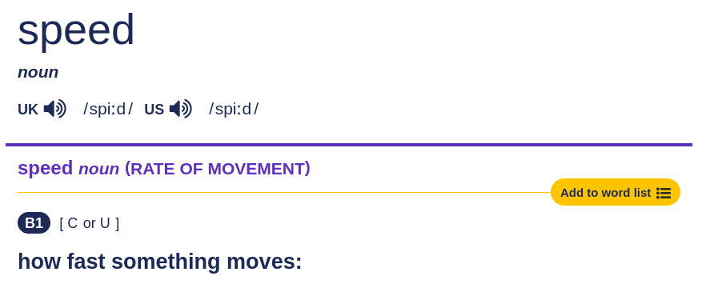

Physics - Year 10
Chapter 2: Forces and Motion
Naypyitaw International Science Academy
2.1 MOTION: Speed, velocity and acceleration
Cambridge English Dictionary: Speed
2.1 MOTION: Speed, velocity and acceleration

Galileo Galilei, 1564 – 1642
"... is usually credited with being the first to measure speed by considering the distance covered and the time it takes."